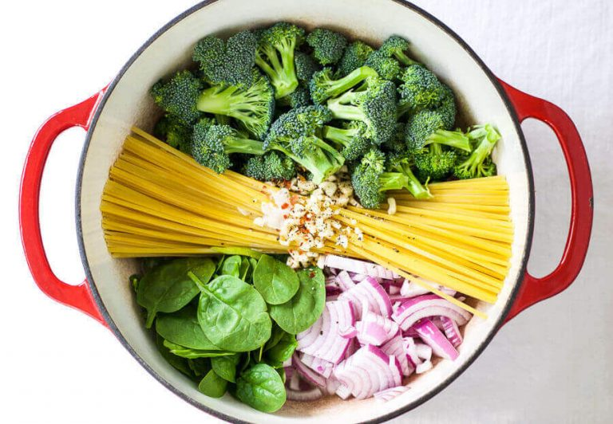
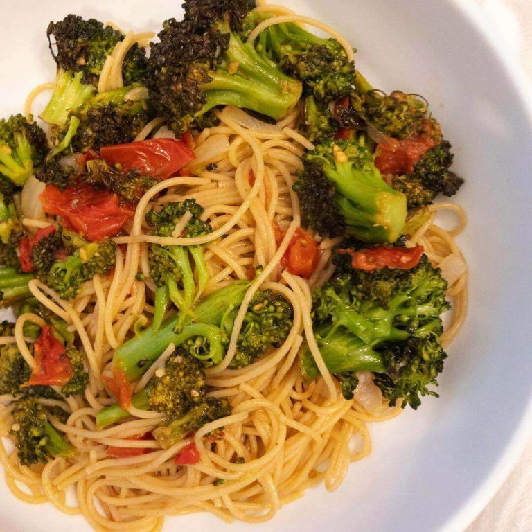

Súp lơ xanh xào gà
Nguyên liệu
600g ức gà; 250g súp lơ xanh; ½ muỗng cà phê vừng đã rang chín;
dầu mè; dầu oliu; bột ngô; hành tây; gừng; mật ong; và các gia vị khác như hành, tiêu, hạt nêm.
Thực hiện:
Bước 1:
Ức gà rửa sạch, cắt miếng nhỏ vừa ăn. Hành tây rửa sạch, cắt khúc nhỏ.
Súp lơ xanh sau khi rửa sạch, cắt khúc từ 4cm- 5cm. Gừng bỏ vỏ ngoài, cắt thành sợi nhỏ, mỏng.
Bước 2:
Trộn nước tương, mật ong, dầu mè, bột ngô tùy theo khẩu vị mỗi người. Đánh đều hỗn hợp cho đến khi sánh mịn.
Bước 3:
Cho dầu oliu vào chảo, khi chảo nóng bắt đầu cho ức gà vào xào cho săn.
Sau đó cho hành tây, gừng cắt sợi, súp lơ xanh và chút tiêu vào xào đều trong 4 phút. Tiếp đó vặn lửa nhỏ và thêm hỗn hợp nước sốt đã làm trước đó vào chảo và đảo đều.
Nấu thêm 5 phút cho đến khi nước sốt có độ sền sệt.
Bước 4:
Tắt bếp, cho món ăn ra đĩa và rắc hạt vừng đã rang lên trên.
Dùng nóng với cơm gạo lứt sẽ cho vị ngon hơn.
Súp lơ xanh nấu món gì ngon?
Bạn có thể xào loại rau này với nhiều nguyên liệu khác như tôm, thịt bò, tỏi…đều cho những hương vị tươi ngon.
Mì spaghetti với súp lơ xanh
Một món ăn với súp lơ xanh nấu món gì ngon mà các bạn có thể tham khảo là mì spaghetti với súp lơ xanh.
Món ăn được dùng phổ biến tại nhiều nước Châu Âu bởi hương vị thơm ngon lại chứa đầy đủ dinh dưỡng.
Nguyên Liệu:
50g mì spaghetti; 200g súp lơ xanh; 50g rau cải bó xôi (rau chân vịt);
2 quả cà chua; dầu oliu; hành, tỏi băm nhuyễn;
các gia vị khác như sốt cà chua, tiêu, hạt nêm.

Thực Hiện
Bước 1:
Súp lơ xanh rửa sạch, cắt khúc vừa ăn. Cải bó xôi rửa sạch, cắt khúc từ 3cm- 4cm.
Cà chua sau khi rửa sạch, cắt hạt lựu.
Bước 2:
Chần súp lơ xanh trong nước sôi trong 2 phút, vớt ra, bỏ vào tô nước đá lạnh.
Bắt nồi nước sôi, cho mì spaghetti vào nấu trong 9 phút, sau đó vớt ra cho ráo nước.
Bước 3:
Bắt chảo, cho dầu oliu vào chảo. Khi chảo nóng, cho hành, tỏi băm nhuyễn vào xào cho thơm, sau đó cho cà chua vào xào cho mềm.
Cho tiếp rau cải bó xôi, súp lơ xanh vào xào, thêm 2 muỗng sốt cà chua và nêm nếm gia vị cho vừa ăn.
Cuối cùng, thêm mì spaghetti vào đảo đều.
Bước 4:
Tắt bếp, cho thức ăn ra đĩa. Dùng khi mì còn nóng.
Bước 5:
Đánh bông nhẹ kem tươi, trộn cùng hỗn hợp kem đang đun.
Để nguội hỗn hợp rồi đổ vào khuôn, đem đông lạnh ở ngăn đá tủ lạnh.

Vậy là bạn đã hoàn thành món kem cốm thơm ngon, mát lạnh trong công thức cốm tươi làm món gì ngon rồi.
Nhanh tay vào bếp và cùng làm những món ăn ngon với cốm đãi cả nhà nào.
Lưu ý
Có rất nhiều công thức cho súp lơ xanh nấu món gì ngon đơn giản mà bạn có thể thực hiện.
Riêng với món mì spaghetti, bạn có thể thêm nhiều loại rau củ khác hoặc chế biến với nước sốt kem tươi cho vị cũng rất ngon.
Súp lơ xanh có thể ăn được tất cả kể cả phần thân.
Những phần có lớp thân già, cứng, bạn có thể gọt bỏ lớp vỏ ngoài, phần thân mềm bên trong thường rất giòn và ngọt, hoàn toàn có thể sử dụng.
Khi nấu các món với súp lơ xanh, nên dùng nóng để giữ được các chất dinh dưỡng và hương vị thơm ngon.